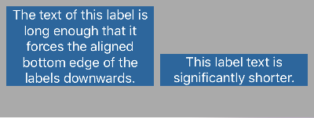

CwlLayout: a Swift wrapper around Auto Layout
Cocoa’s Auto Layout is an effective constraints system but as an API for “layout”, it leaves a lot to be desired. In most respects, Auto Layout is a constraints API upon which we can build a layout system but is not itself an API that offers layout.
In this article, I’m going to look at why using Auto Layout directly can be frustrating or limiting, before showing my own CwlLayout code which is a thin layer over Auto Layout (for either iOS or macOS) that I use to make layout less laborious and less error prone.
You can download this article as a Swift Playground from github.
Declarative programming
Declarative programming is about describing a program as a set of rules and relationships. Syntactically, declarative programming is often about assembling a whole system of rules as either a single expression or domain-specific language whose structure reflects the relationship between the rules in the system.
Layout is an inherently declarative task. Layout is a set of rules (which Auto Layout calls “constraints”) that apply to the contents of a view, ideally for the entire lifetime of the contents. Constraint programming itself is sometimes considered a subdiscipline of declarative programming.
Unfortunately, despite Auto Layout modelling a declarative system, it doesn’t offer a very declarative API. There are a handful of ways to use Auto Layout but none can be written as a single expression, most require a number of mutable property changes and in many cases, multiple constraints must applied at separate times.
The end result is unaesthetic code that is inconsistent by default. In fact, since each view requires 4 separate constraints (width, height, x-placement, y-placement), any arbitrary set of Auto Layout constraints is far more likely to be inconsistent than consistent – and an inconsistent system of rules is no system at all.
An example layout
Let’s look at a “simple” layout example to see what I mean. All of the examples in this article construct the following layout:

This layout contains two UILabels and the gray area is the boundary of the container UIView.
The layout aligns the bottom edges of the two UILabels, makes both labels the same width and places both within the parent view so that the tallest touches the upper margin of the view, the left and right labels touch the left and right margins, the labels are horizontally separated by a margin width and the bottom of the view is left vacant.
A key point to note about this layout is that it doesn’t encode the height of either label. If the text changed the labels would adjust their heights, possibly changing which label touches the top margin and possibly changing how much of the view is left vacant at the bottom but they would maintain their equal widths and maintain their aligned bottom edge.
Manually applied constraints
Let’s see how this looks using manually applied constraints:
import UIKit
import PlaygroundSupport
func example1(view: UIView, left: UILabel, right: UILabel) {
left.translatesAutoresizingMaskIntoConstraints = false
right.translatesAutoresizingMaskIntoConstraints = false
view.addSubview(left)
view.addSubview(right)
let constraints = [
left.leadingAnchor.constraint(equalTo: view.layoutMarginsGuide.leadingAnchor),
right.trailingAnchor.constraint(equalTo: view.layoutMarginsGuide.trailingAnchor),
left.bottomAnchor.constraint(equalTo: right.bottomAnchor),
left.trailingAnchor.constraint(equalTo: right.leadingAnchor, constant: -8),
left.topAnchor.constraint(greaterThanOrEqualTo: view.layoutMarginsGuide.topAnchor),
right.topAnchor.constraint(greaterThanOrEqualTo: view.layoutMarginsGuide.topAnchor),
left.widthAnchor.constraint(equalTo: right.widthAnchor)
]
NSLayoutConstraint.activate(constraints)
let leftTop = left.topAnchor.constraint(equalTo: view.layoutMarginsGuide.topAnchor)
leftTop.priority = LayoutDimension.PriorityDefaultLow
leftTop.isActive = true
let rightTop = right.topAnchor.constraint(equalTo: view.layoutMarginsGuide.topAnchor)
rightTop.priority = LayoutDimension.PriorityDefaultLow
rightTop.isActive = true
}
let view1 = runExample(reversed: false, example: example1)NOTE: if you’re viewing this in the Swift Playground, the last
let view1 =line will have a gray “Show Result” square in the right margin. Click this square to view the layout. Set thereversedparameter totrueto swap the labels on the text fields.
The clear problem here is the raw volume of code. I’ve had to write nine separate constraints, set a handful of properties and other actions including adding subviews and activating constraints. It’s a lot of unforgiving, meticulous work. Omitting any line will not merely change the layout but is likely to leave the layout in one of the following four problematic states:
- inconsistent (no single solution that satisfies all constraints)
- ambiguous (more than one solution that satisfies all constraints)
- overlapping (views partially or completely occupying the same space, unintentionally)
- overflowing (views exceeding the bounds of the parent, unintentionally)
These problems will not manifest as compile-time errors that clearly say “fix this line”, they are runtime errors which may give confusing or difficult to understand results. Even if you get information in the console about reporting “ambiguous layout affecting height of view [x]“, it can be very difficult to go back to your mess of constraints and find where you’ve gone wrong.
Constraints are hard.
Brain teaser: one (and only one) of the 9 constraints can be removed without leaving the layout in one of the four problematic states listed, above. Can you guess which one?
Much of the debate I see around Auto Layout focusses on how it’s cumbersome to implement in code (as opposed to Interface Builder) but all of these 9 constraints would still need to be applied in Interface Builder to achieve this layout and you’d still need to understand why each of the constraints is necessary.
Interface Builder can give more immediate feedback when the layout is ambiguous or inconsistent but it doesn’t change the number of constraints you’ll need to create or the need guess, from messages like “ambiguous layout affecting height of view [x]“, where you may have made a mistake. You need a deep understanding of the constraints system to avoid misuse and while it’s not rocket science, it can still be confusing.
Pseudo-layouts
The problems with manually applied constraints stem from the fact that views require at least 4 constraints at any time (width, height, x-placement, y-placement) but the API applies 1 rule at a time. Ensuring the set of rules is consistent requires knowledge about the desired end-effect. Columns? Rows? Aspect ratio sizing?
Let’s try another approach – the Auto Layout constraints(withVisualFormat:... function.
Ostensibly, the purpose of this function is to provide better visualization of constraints but it has a much greater advantage: geometry. The constraints(withVisualFormat:... function partially models a column or row so it can determine which additional constraints might be required to ensure alignment within the column or row and ordering of items from end-to-end.
Here’s how it plays out:
func example2(view: UIView, left: UILabel, right: UILabel) {
left.translatesAutoresizingMaskIntoConstraints = false
right.translatesAutoresizingMaskIntoConstraints = false
view.addSubview(left)
view.addSubview(right)
let views = ["left": left, "right": right]
let constraints1 = NSLayoutConstraint.constraints(withVisualFormat:
"|-[left]-[right(==left)]-|", options: .alignAllBottom, metrics: nil, views: views)
let constraints2 = NSLayoutConstraint.constraints(withVisualFormat:
"V:|-(>=8)-[left]", options: [], metrics: nil, views: views)
let constraints3 = NSLayoutConstraint.constraints(withVisualFormat:
"V:|-(>=8)-[right]", options: [], metrics: nil, views: views)
NSLayoutConstraint.activate(constraints1)
NSLayoutConstraint.activate(constraints2)
NSLayoutConstraint.activate(constraints3)
}
let view2 = runExample(reversed: false, example: example2)It’s a lot shorter but it’s still precarious. While impossible constraints are less common, ambiguous layouts are still possible due to the fact that the modelling is primarily 1-dimensional but constraints must agree in two dimensions.
There also remain numerous esoteric requirements like the “greater or equal” vertical spacing constraint that could easily be misapplied, creating problems in this type of layout.
An actual layout
No matter how you apply them, constraints are not layouts; constraints are building blocks from which we can make layouts. An actual layout requires starting a different way.
UIKit and AppKit provide UIStackView/NSStackView. Let’s take a look:
func example3(view: UIView, left: UILabel, right: UILabel) {
let row = UIStackView(arrangedSubviews: [left, right])
row.alignment = .bottom
row.spacing = 8
let topAlignedBox = UIStackView(arrangedSubviews: [row])
topAlignedBox.alignment = .top
topAlignedBox.autoresizingMask = [.flexibleWidth, .flexibleHeight]
topAlignedBox.frame = view.bounds
topAlignedBox.isLayoutMarginsRelativeArrangement = true
topAlignedBox.preservesSuperviewLayoutMargins = true
view.addSubview(topAlignedBox)
}
let view3 = runExample(reversed: false, example: example3)Using a UIStackView is vastly better than raw constraints. UIStackView distributes views equally along its axis – which happens to be the arrangement I’ve used in this article – and most of the properties on the stack view can simply be omitted and the layout would not be ambiguous, inconsistent, overlapping or overflowing.
However, there are a few problems:
- There are still properties whose configuration can’t be omitted
- Stack view can’t be configured in a single expression
- Stack view is relatively inflexible
On the first problem: you need to correctly place the outer stack view in the view or nothing will appear. Delete the frame line to see what happens. The autoresizingMask can also be problematic if the container view needs to resize.
On the second problem: you can see in the example that I had to nest one stack view within another to achieve the correct layout. Nested layers is not a problem but since stack views can’t be fully configured in a single expression, the implementation grows increasingly messy as we need to assign all the stack views to variables, configure them and finally assemble them.
On the third point: unless you resort to adding bare constraints (the very situation we’re trying to avoid) it can be difficult to control the widths of items in a Stack View row or the heights in a Stack View column. Supposedly, UIStackView scales based on compression resistance and hugging priority but I was not able to use these values to tweak the sizes of the child views.
CwlLayout
UIStackView/NSStackView provide a good conceptual model for layout but their implementation is lacking.
A declarative approach – where the whole system of constraints is established in a single expression – would be much better. Fortunately, Swift has a number of syntactic advantages that can help us, here. Swift has:
- enums with associated types
- dot lookup of static members on a type
- typesafe variable argument lists
- parameters with default arguments
By using these, we can write code that is close to a structured declarative language-within-a-language for specifying layout.
Let’s take a look:
func example4(view: UIView, left: UILabel, right: UILabel) {
view.applyLayout(
.horizontal(align: .leading,
.horizontal(align: .trailing,
.matchedPair(.view(left), .view(right))
)
)
)
}
let view4 = runExample(reversed: false, example: example4)Conceptually, this uses the same approach as the previous UIStackView example: we have a row containing a pair of views aligned to the bottom edge inside another box aligned to the top (alignment here is perpendicular to the layout direction so the align parameters .leading and .trailing are interpreted as “vertically leading” – i.e. top – and “vertically trailing” – i.e. bottom).
Compared to UIStackView though, this example is more syntactically efficient, has a visual structure that reflects its compositional structure, is a single expression and is inherently consistent.
That last point might be the most important: you can remove subviews entirely from the hierarchy but there is nothing you can remove that leaves the layout in an inconsistent, ambiguous, overlapping or overflowing state. Don’t misunderstand me: you can still add inconsistent constraints with CwlLayout but you need to take positive action to introduce inconsistency – the system is consistent by default.
You’ll notice too that there’s no need to add subviews or configure other properties on the views like translatesAutoresizingMaskIntoConstraints. It is all handled automatically. Additionally, a subsequent call to applyLayout (including applyLayout(nil)) will precisely remove any previously applied layout, the constraints applied by the layout and any added subviews (leaving views and constraints added by other means untouched). Everything is done in a single operation.
Some variations
Custom size constraints
I mentioned that one of the drawbacks to UIStackView is that it can be difficult to control the size of contained items – the stack view applies its own sizing logic which is opaque and difficult to override.
For example, imagine instead of this 50⁄50 split, we wanted a 75⁄25 split. With CwlLayout, it’s simple to use a sizedView (one which includes explicit size constraints):
func example5(view: UIView, left: UILabel, right: UILabel) {
view.applyLayout(
.horizontal(align: .leading,
.horizontal(align: .trailing,
.sizedView(left, .lengthEqualTo(ratio: 0.75, constant: -0.75 * 8)),
.interViewSpace,
.view(right)
)
)
)
}
let view5 = runExample(reversed: false, example: example5)The 0.75 ratio is a ratio of the parent container – i.e. the inner .horizontal layout, which the outer .horizontal layout has already inset by the view’s margins. However, we also want to leave space for the 8 pixel space between the two labels, hence the -0.75 * 8 constant which is subtracted from the width, leaving a perfect 3:1 ratio between the two labels.
The “8 unit space” is created by interViewSpace, equivalent to .space(8.0). CwlLayout included an interViewSpace automatically between the matchedPair in the previous example but since we’re managing the row more manually this time, it’s been explicitly included. This 8 unit separation is a standard space that Apple suggests for container margins and spacing between adjacent views.
Note however that UIViewController has very different margins and the safeAreaGuides in iOS 11 are different again. CwlLayout respects margins by default on the outermost layout container and there’s a marginEdges parameter (hidden in this example) that lets you toggle each margin edge between safe-area, layout margins and no margins.
It’s also possible to specify the breadth (size perpendicular to layout direction). If the breadth is specified as a ratio, it can be a ratio of the parent container or a ratio of the length so aspect ratio preserving sizing is possible.
Controlling vertical placement
The two previous examples have used nested .horizontal rows (because it’s what I used in the UIStackView example) but I could just as easily change the outer container to a column and start controlling vertical placement:
func example6(view: UIView, left: UILabel, right: UILabel) {
view.applyLayout(
.vertical(
.space(.equalTo(ratio: 0.15)),
.horizontal(align: .trailing,
.matchedPair(
.view(left),
.view(right)
)
),
.space(.fillRemaining)
)
)
}
let view6 = runExample(reversed: false, example: example6)Usage
The CwlLayout.swift file is available in the Sources folder of the Swift Playground for this article. The file has no dependencies beyond AppKit/UIKit so you can just drop it into any of your projects.
CwlLayout supports deployment targets of macOS 10.11, iOS 9 and later.
Swift 4 and iOS 11/macOS 10.13: If you’re building with Swift 4, then you must use the iOS 11 or macOS 10.13 SDK. If you’re building with Swift 3.2 or lower, then you must use the iOS 10 or macOS 10.12 SDK. I don’t like tying the Swift version and SDK versions together like this but I’m not sure how else to handle the changes in the SDK overlay.
The file lacks full test coverage so there may be some rough edges. If you encounter any obvious bugs, let me know.
At the moment, CwlLayout does not support animation. It would be nice to animate from one arrangement to another but that’s a task for the future. Support for text baseline alignment is also not yet implemented.
If you look at the code, you’ll notice that there’s a DEBUG setting in there. For many tasks, CwlLayout uses UILayoutGuide/NSLayoutGuide to define regions but a compile condition will switch these guides to UIView/NSView instead since views show up better in the debugging tools in Xcode.
Conclusion
Using Auto Layout constraints directly is an exercise in frustration. They are inconsistent by default and errors won’t be caught by the compiler, so runtime problems are a continual issue. The fact that the code is often unaesthetic and uncomposeable adds to the frustration.
Apple’s documentation and videos focus on using Auto Layout in Interface Builder, which avoids the aesthetics of the code but the fact remains that even in Interface Builder, you’re still just applying the same independent constraints and it’s still prone to being inconsistent if you’re not precise and accurate.
A far better solution for programming a declarative constraints system is to use an API that itself is declarative and builds the whole system as a single composeable expression and rather than constructing individual constraints separately. An approach that understands the whole system and can automatically include constraints needed will also aid consistency.
A UIStackView or NSStackView gets part of the way towards this ideal. These classes understand the overall layout and limit the amount of inconsistency but they are relatively inflexible and typically require multiple statements to configure.
CwlLayout isn’t complicated or revolutionary; it is just a more-flexible column and row approach like UIStackView or NSStackView. Unlike UIStackView or NSStackView however, it is designed exclusively for Swift and takes advantage of Swift’s syntactic efficiency for a more aesthetic design.
Looking forward…
Layout is just the tip of the iceberg.
Almost all app development – windows, views, controls, buttons, actions, fonts – can be handled as a set of rules. Some rules determine the mapping between model and display and some dictate how events and user-actions should be routed and handled.
How would a declarative approach for an entire app look?
An aside about flatMap and monads
The worst possible application